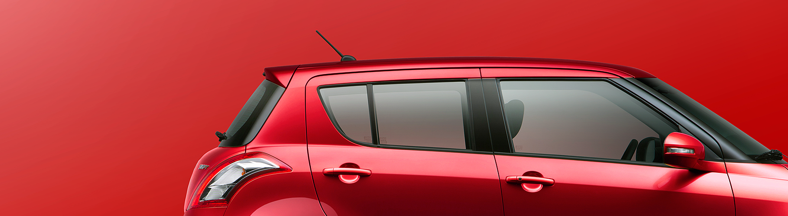
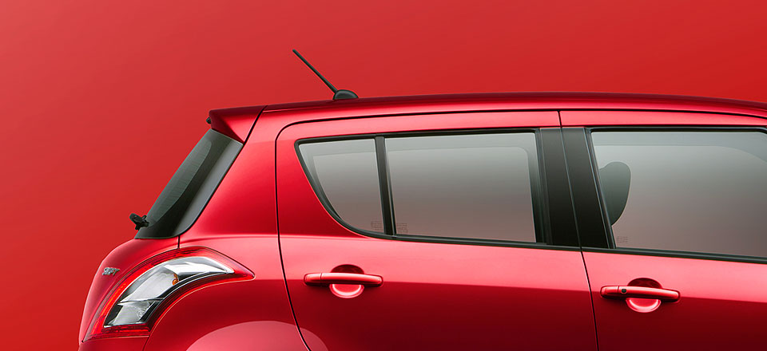
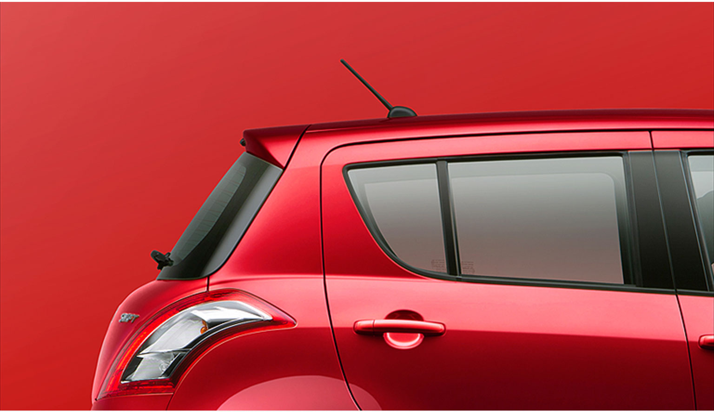
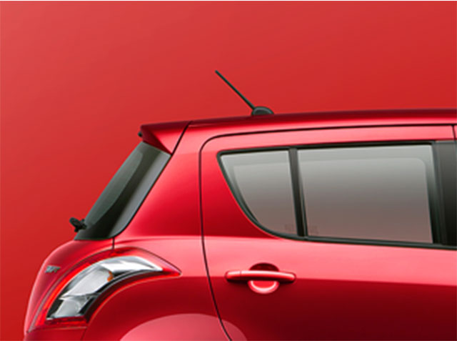
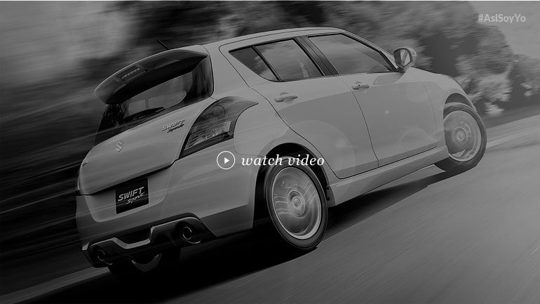
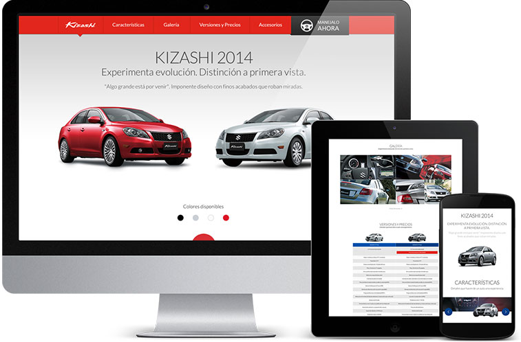
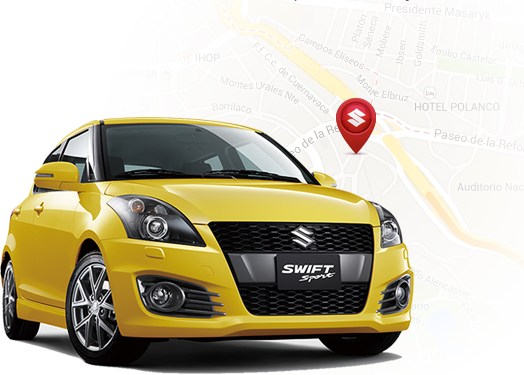

Driving Suzuki’s way of life into a digital future
Suzuki Motor Mexico partnered with ktc to engage with digital consumers. Together with the brand, we built a roadmap for an integrated buying experience through customer journey analysis, new digital touchpoints, brand advocacy, and dealer integration. The brand embraced a new paradigm to the future.
   WHO NEED FANS WHEN YOU'VE GOT ADVOCATES?
In auttomotive it’s people making the brand, for 80% of consumers trust friends in their buying decision. We brought to life the concept #AsíSoyYo (ThisIsMe) to involve clients in the brand and promote User Generated Content on Facebook, Instagram and Twitter. The result? Suzuki has connected with enthusiasts, converting them into advocates convincing new potential customers.
MULTIPLE TOUCHPOINTS, MULTIPLE EXPERIENCES
Branded Webpages, YouTube, Facebook, mobile, car dealership… the customer path to purchase has an average of 18 touchpoints. For Suzuki these are 18 opportunities converted into meaningful experiences. With incredible design, great content, and fast response times we’ve delivered compelling buying journey. The Suzuki experience is smooth and always available.
PUTTING MOBILE FIRST
Automotive is about mobility… and so is the digital era. One of the most revolutionary insights that encourages digital transformation rests on this simple truth: 40% of internet traffic comes from mobile devices. We tailored mobile experiences–just like cars do. With responsive websites, Instagram, dealer app, Snapchat.
WHO WANTS TO GO FOR A RIDE?
Ordering a test drive online is nothing new. But in an industry where 94% of customer journeys start online, we dared set the bar a bit higher and created Instant Drive, a location-based delivery service that allows people to order a demo car online easily and have it at their door in less than one hour. The car of your dreams, just one click away.
------
WHO WANTS TO GO FOR A RIDE?
Yes, we’ve made mistakes! Pinterest didn’t work out, but online selling did. Digital transformation is about failing fast, just like a startup. And it’s never ending. A real long term partnership between brand and agency.
SMILE-PROVOKING RESULTS